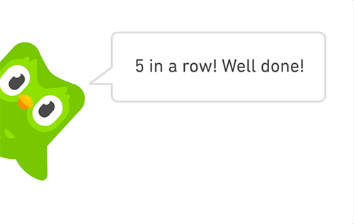

Бесплатное обучение языку. Duolingo - это бесплатная платформа для изучения языков.
Она доступна для всех, кто хочет научиться новому языку. Это дает людям возможность изучать язык даже без значительных финансовых вложений.
Удобная форма обучения. Duolingo предлагает пользовательскую дружественную форму обучения языку, которая учитывает особенности каждого ученика.
Пользователи могут изучать язык в своем собственном темпе, повторять уроки и переходить к более сложным урокам, когда они готовы.
Эффективность. Дуолинго использует современную методику обучения, включающую в себя элементы геймификации, которая делает обучение более привлекательным и интересным. Это помогает учащимся лучше запоминать материал и быстрее достигать результатов. Кроме того,
Duolingo использует искусственный интеллект для персонализации обучения каждому пользователю, что повышает эффективность обучения и помогает достигать лучших результатов.
